Series
Light
The same subjects turned toward the source: form described by illumination rather than concealed by it.

Plate I
Folded In
The bird curls into itself, white on white, with only a bill and one dark eye to anchor it.
Light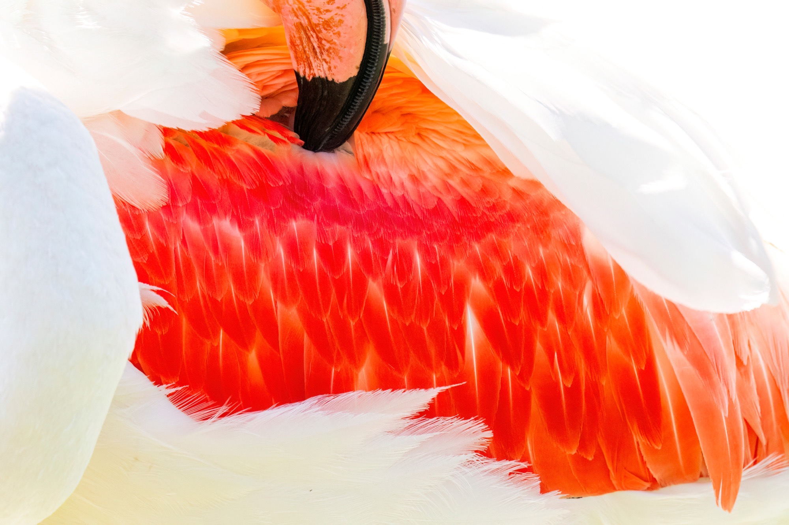
Expand{kind=link}
Plate II
Vermilion
Head tucked away, the picture belongs entirely to the red of the wing coverts.
Light{kind=link}
Plate III
Recumbent
A resting body reduced to a long horizontal of white with a seam of colour running through.
Light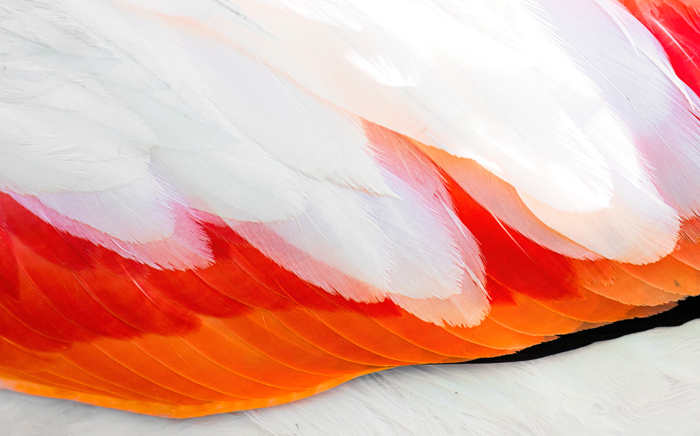
Expand{kind=link}
Plate IV
Feather Map
Close enough that the plumage stops being a bird and becomes a landscape of overlapping edges.
Light{kind=link}
Plate V
Crossed Legs
Balanced on crossed legs in an empty white field, the body made almost weightless.
Light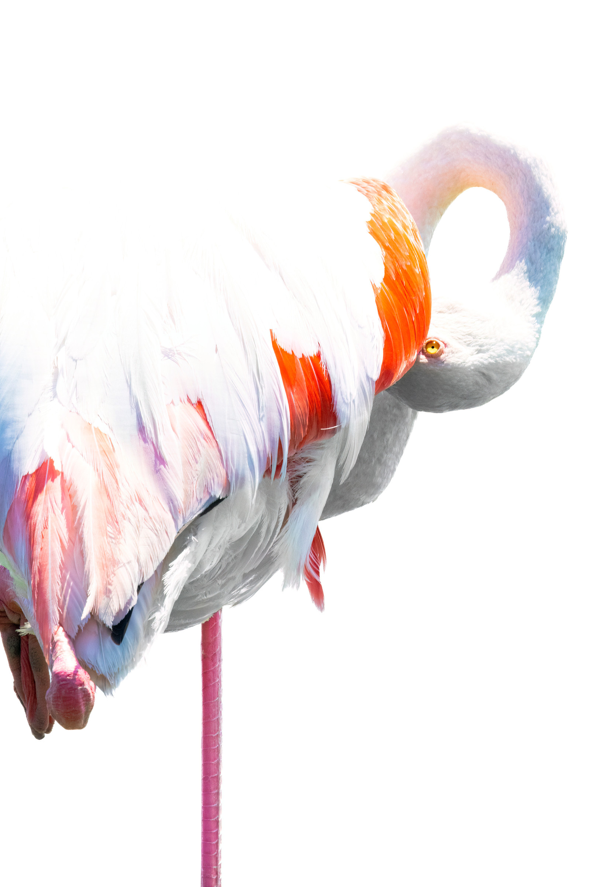
Expand{kind=link}
Plate VI
Over the Shoulder
The neck reaches back across the body, drawing a loop that closes on itself.
Light{kind=link}
Plate VII
Profile
A head in pure profile: the pink of the bill, the black tip, the pale ring of the eye.
Light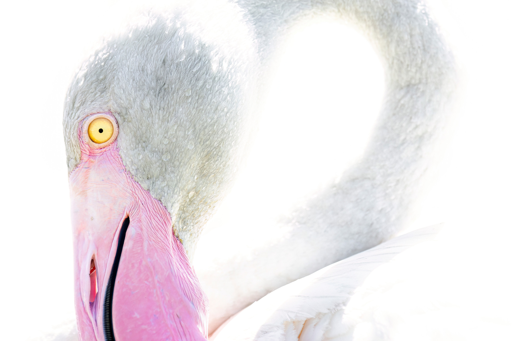
Expand{kind=link}
Plate VIII
Two Necks
One bird faces us and another curves away behind it — a portrait and its own echo.
Light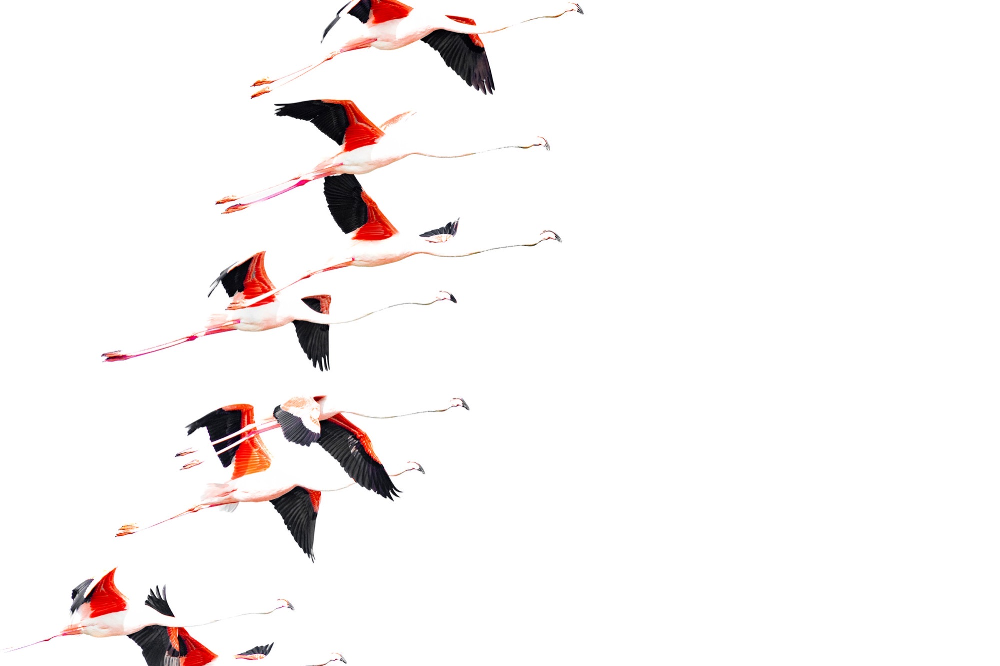
Expand{kind=link}
Plate IX
Ascending
A line of birds climbs across an otherwise empty frame, black wingtips beating.
Light{kind=link}
Plate X
Geometry
Neck, thigh and shin arranged into a set of angles that could have been drafted.
Light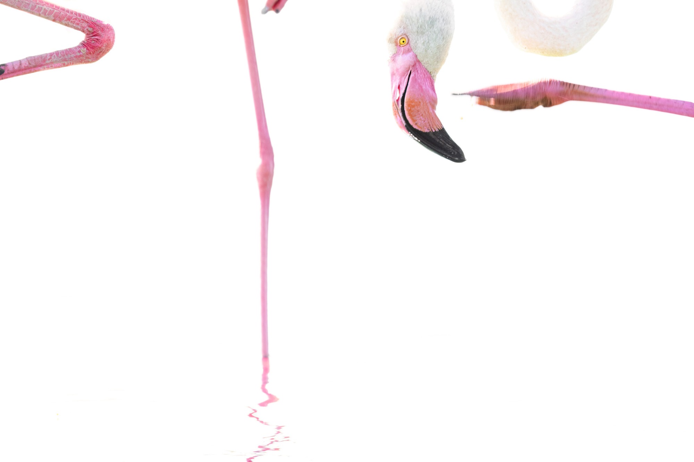
Expand{kind=link}
Plate XI
On One Leg
The familiar posture stripped of any setting: one leg, one long neck, nothing else.
Light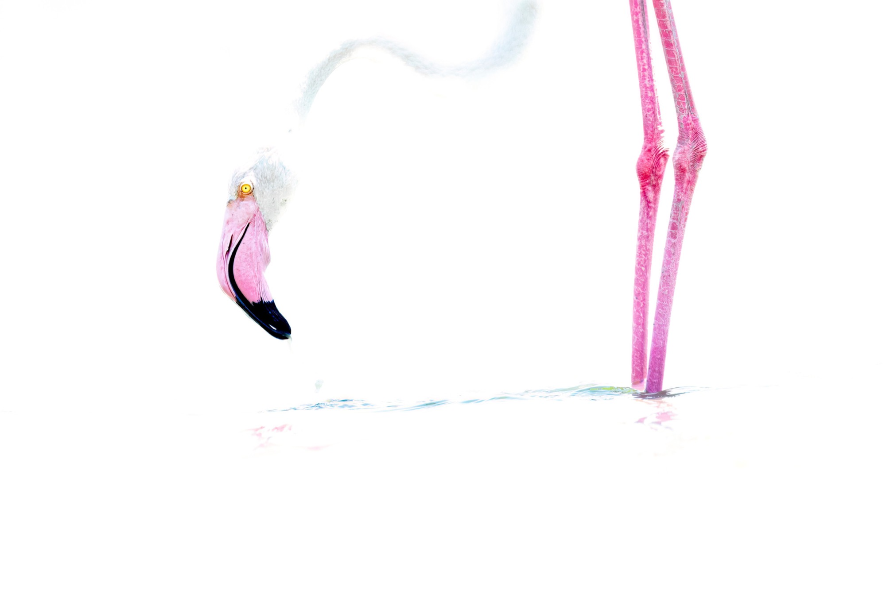
Expand{kind=link}
Plate XII
Wet Sand
A faint reflection is the only thing separating the bird from the white ground.
Light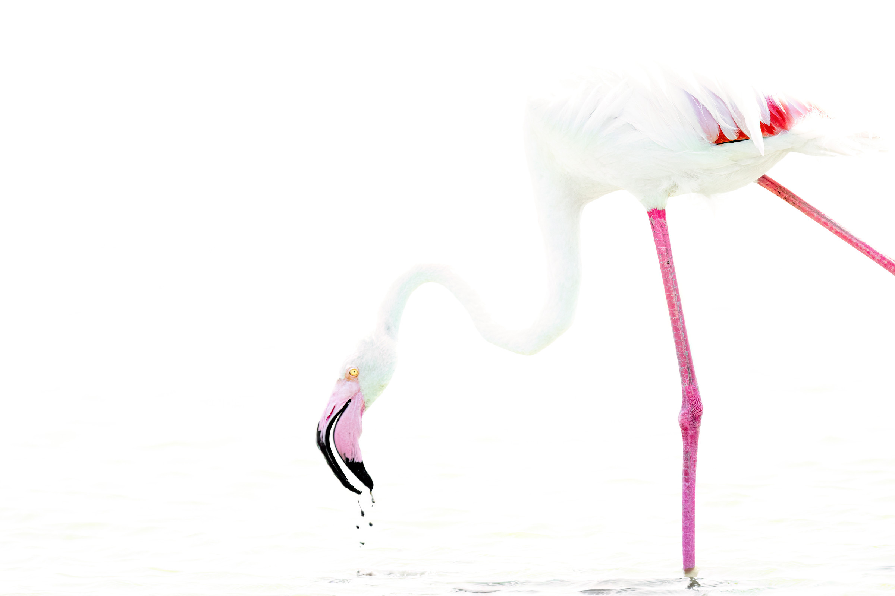
Expand{kind=link}
Plate XIII
Drinking
The bill breaks the surface and lifts again, taking a few beads of water with it.
Light{kind=link}
Plate XIV
Colonnade
A wading group seen at leg height, the limbs standing in for columns.
Light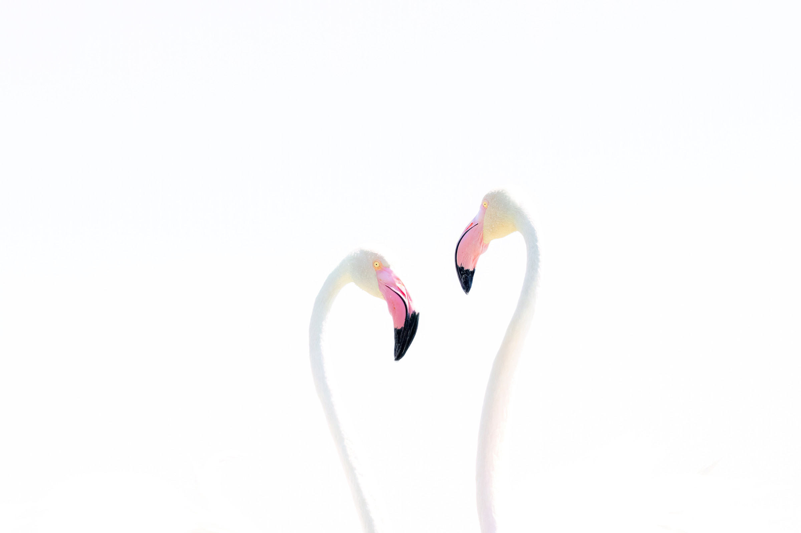
Expand{kind=link}
Plate XV
The Meeting
Two necks curve toward one another and, for a moment, close a shape between them.
Light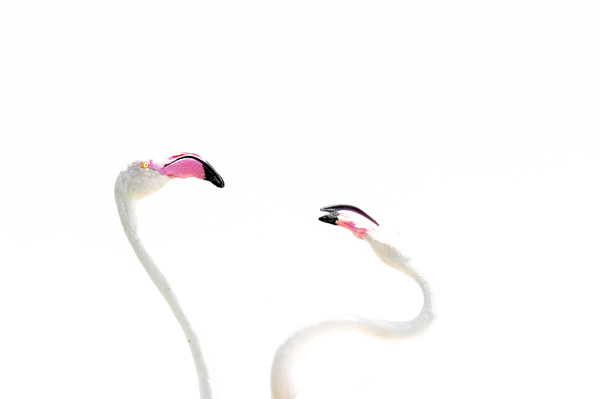
Expand{kind=link}
Plate XVI
Crossing
Two birds pass, their necks crossing at exactly the height of their eyes.
Light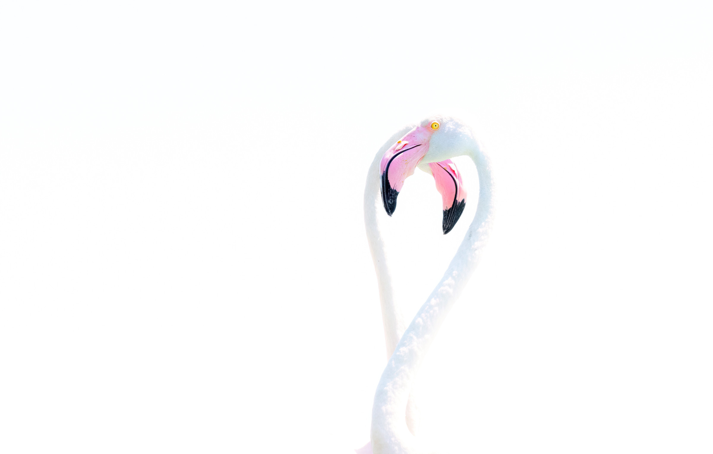
Expand{kind=link}
Plate XVII
The Hook
A single neck bends back on itself until the head hangs level with the breast.
Light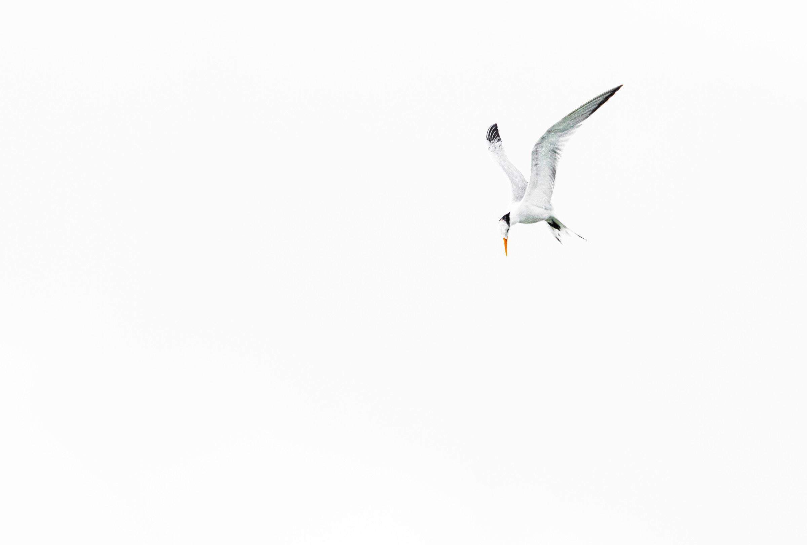
Expand{kind=link}
Plate XVIII
Passing Overhead
A small bird crosses an empty sky, given the whole frame in which to be small.
Light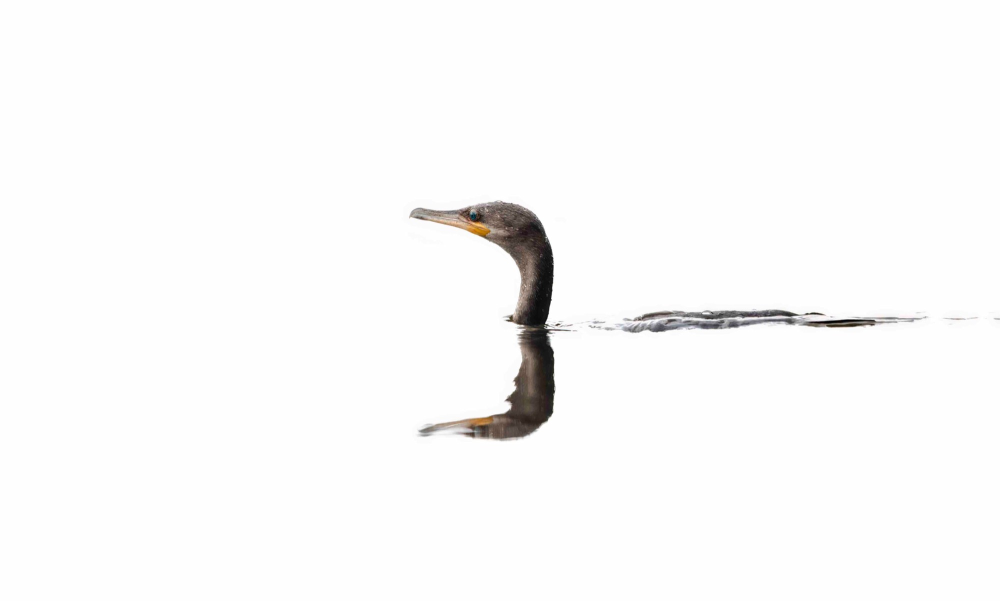
Expand{kind=link}
Plate XIX
Waterline
Low to the surface, the bird and its reflection meet along a single unbroken line.
Light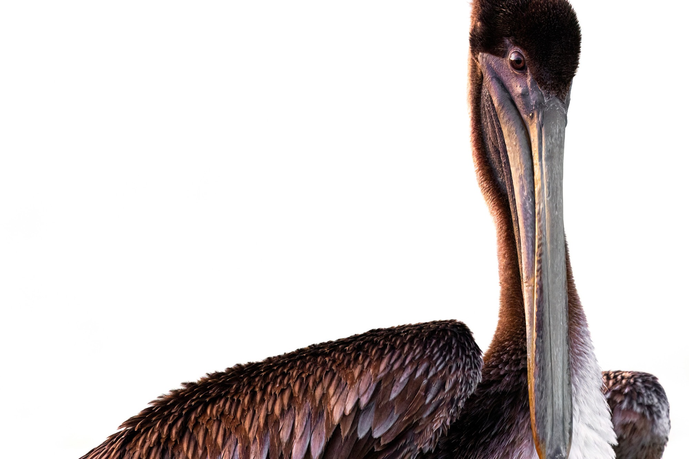
Expand{kind=link}
Plate XX
Pelican
A brown pelican in full frame, the long bill running most of the height of the picture.
Light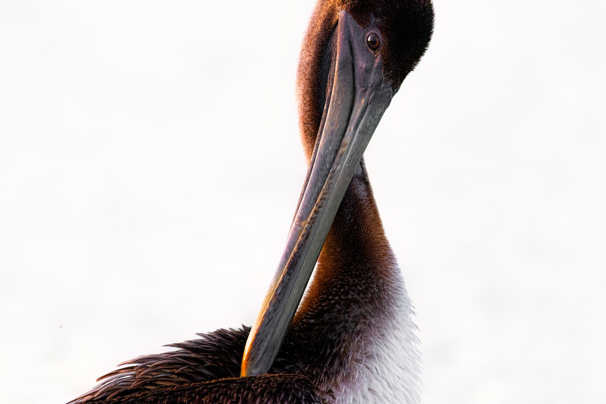
Expand{kind=link}
Plate XXI
The Pouch
Closer still: the hinge of the bill, the loose skin of the pouch, the eye set far forward.
Light{kind=link}
Plate XXII
In Breeding Plumage
A great egret in season — the lores turn green and the bill orange, for a matter of weeks.
Light{kind=link}
Plate XXIII
Head On
A caiman seen from directly above, symmetrical to the millimetre.
Light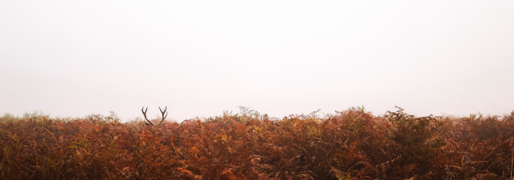
Expand{kind=link}
Plate XXIV
Antlers in Bracken
Fog, dead bracken and two antler tips: the only evidence that a stag is there at all.
Light